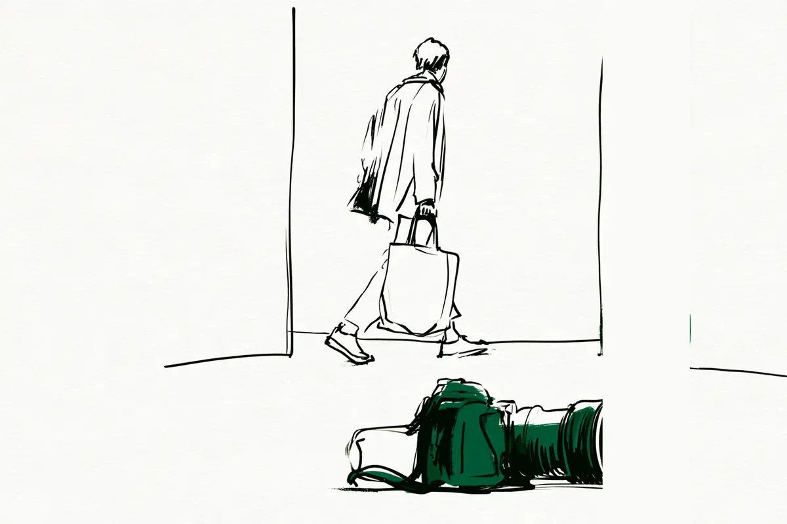
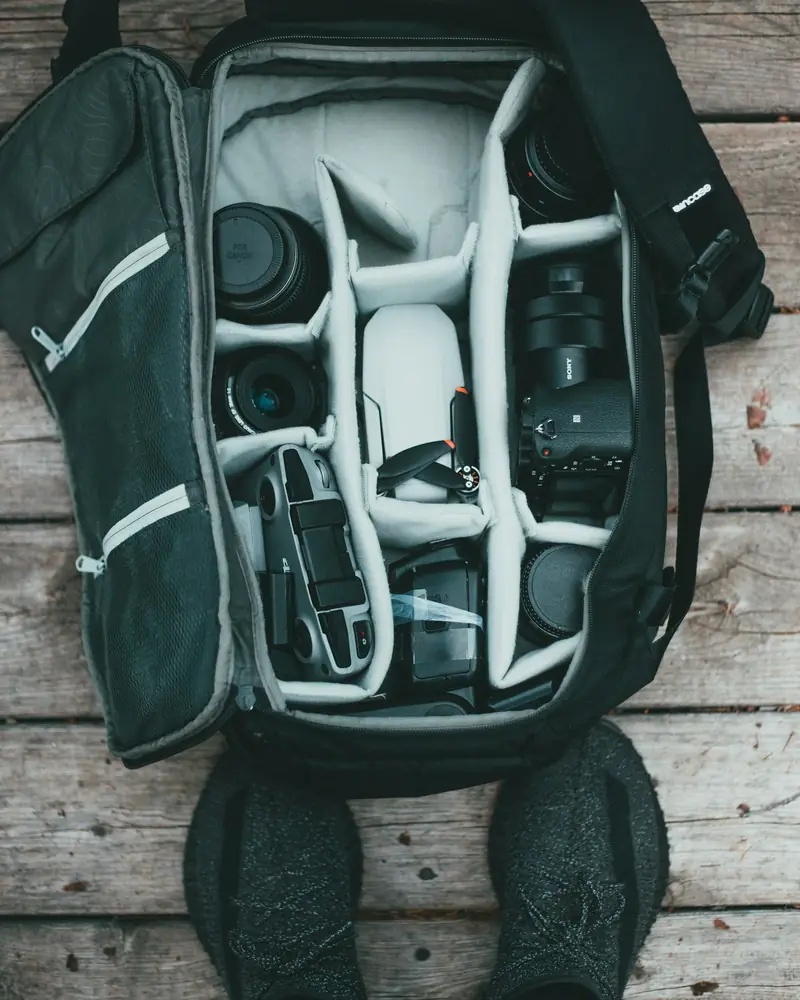

この記事には広告(アフィリエイトリンク)が含まれます。
現在地: 買ったけど使えてない
一眼レフが重くて使わなくなった…軽くしても持ち歩かない人も

一眼レフ(鏡を使ってのぞくタイプのカメラ。言葉の意味)が重くて使わなくなった人のその後を読むと、軽い機種に替えても持ち歩かなかった人がいました。撮りに行く日だけ重い方を持つ使い分けの人も、重いまま続けている人もいます。知恵袋・価格.com・note・個人ブログで、重いと感じた人のその後を探して読みました(私はカメラを持っていません)。
すでに持っている人は売る?置いておく?へ、買う前の人は確かめることへ、全体は早見表へどうぞ。
重くて使わなくなった人のその後は7通り(早見表)
| その後 | どんな人がいたか |
|---|---|
| 目的の日だけ重い方を持つ | 撮りに行く日は重い機材、普段は小さいカメラかスマホ |
| 軽いカメラに替えて続いた | 小型のミラーレスやコンデジにして、撮る日が増えた |
| 軽くしても、また分かれた | 小型軽量でも手が疲れて重い方へ。さらに小さいコンデジに出番を取られた |
| 重くても続けている | 数日で慣れた。重さを覚悟として選ぶ |
| 置いておいて、また使い始めた | 売らずに置いて、数か月後や十数年後に持ち歩くように(理由は重さ以外の2人) |
| 売って身軽になった | 全部売ってコンデジへ。フルサイズを売って後悔なし |
| 手放して後悔・買い戻した | 同じ機種を買い戻した。軽いレンズを売って後悔(理由は重さ以外) |
分け方は私の読み方で、1人が2つ以上に入ることもあります。数えたのは、重さや持ち出しについて自分のことを書いた41人です。使わなくなった理由が重さではない人(仕事の忙しさ・不具合・資金など)が5人いて、その後の対比にだけ使いました。重くて持ち出さなくなる理由そのものは、一眼レフを買ったけど後悔…とカメラ趣味はやめとけ?にあります。材料は2011年から2026年までです。いまはミラーレス(センサーが見た映像を画面でのぞくタイプ)が中心なので、一眼レフの入門機が主流だった頃の古いものには年を添えました。
持っている人が、すぐできること
お金がかからない順です。私が勧めているのではなく、読んだ声の中にした人がいた、という意味です。
- 撮りに行く日だけ重い方を持ち、普段は小さいカメラかスマホにする。 2024年の知恵袋にも2026年のnoteにも同じ形の人がいます(使い分けの節)
- 普段用の軽いカメラを決める。 続いた人と、軽くしても持ち歩かなかった人の両方がいます(軽いカメラの節、また分かれた人の節)
- 普段のバッグに小さなポーチで入れる、レンズを1本にする。 ポーチは実際にした人が1人、レンズ1本はその人のすすめです(軽いカメラの節、ポーチやバッグの声)
- 売る前に、相場だけ見て置いておく。 これは私からの提案です。置いておいて使い始めた人と、売って後悔しなかった人の両方がいました(売る?置いておく?の節)
- 買い足すなら、持ちやすさを借りて確かめてから。 知人などから借りて確かめた人が2人います。レンタルサービスを使ったと書いた人はいませんでした(買う前の節)
ストラップを替える、三脚をやめる、という対策は、替えて持ち出すようになった本人の体験談が見つかりませんでした(対策の節)。
目的の日だけ重い方を持つ
重い機材を手放さず、持ち出す日を決めた人たちです。私の分け方では多めでしたが、分け方で順位は変わります。2024年の知恵袋の回答者の1人は、撮りに行くぞと気合いを入れたときだけ重い機材を持ち、散歩や旅行は小型のミラーレス、スマホは常に持っている、と。
常に持っているということは、カメラの性能以上にアドバンテージが有ります
毎日ポケットに入るカメラを持ち歩くShogoさんは、学生時代の海外の旅で、重い一眼レフは負担になると考えた人です。出発前に小さなカメラを選びました。
毎日満員電車に揺られる生活の中で、やはり大きなカメラを持ち歩くのは現実的ではありません。
いまは大きな機材をここぞという日に、小さなカメラを毎日に、と分けています。2023年の知恵袋にも、撮影用の大きな機材は旅行には持っていかない、という回答がありました(その回答)。
古い相談にも同じ形はあります。2011年の知恵袋には、子連れ旅行は荷物で手一杯なのでコンデジ(レンズを交換できない小型のカメラ)にする、という回答がありました(その回答)。使い分けは、重い方を売らなくてすむ代わりに、カメラが2台になります。軽い方ばかり使って重い方を売った人は、売った人の小見出しに出てきます。
軽いミラーレス・コンデジに替えて、撮る日が増えた人
2024年の知恵袋のベストアンサーは、一眼レフが重くて持ち歩かなくなり、手放した人の回答でした。その後が書かれています。
しばらく写真はスマホだけで済ましていたんだけど、やはり物足りなくて小型のミラーレスで復活しました。
いまはレンズも買い足して、街歩きに使っているそうです。同じ質問には、ミラーレスで復活したが、レンズが増えて一眼レフの頃より重い、本格的に撮るようになったら苦にならない、という回答もありました(その回答)。軽くしたから続いたというより、撮りたいものが先にあった、と私は読みました。2022年の知恵袋には、重いのと1台にまとめたかったのとで一眼レフ2台からミラーレスへ替えた人もいます(その回答)。
Lifewareさん(カメラの紹介もしているサイトです)は、高性能なカメラが棚の上に置かれたままになり、画質や機能より軽さを先に見るようにした人です。普段のバッグに小さなポーチで入れるほうが続いた、と。ミラーレスの日はレンズを1本に、というのは読者へのすすめです。
軽いカメラへ変えて、いちばん変わったのは撮影枚数ではなく撮影した日数でした。
初心者が最初に買った機種で、軽さや重さの声がどう出ていたかは、初心者が最初に買ったカメラ、口コミで多かった機種と後悔の声にまとめました。
この方の理想はコンデジで300g前後、ミラーレスはレンズ込み500g前後が上限だそうで、本人の目安です。
商品の紹介をしていない人でも、同じ向きの人がいます。子どもが小さく荷物が多かったimaiさんは、持ち歩きが苦にならないAPS-C(光を受け止める板=センサーが、一番大きいフルサイズより一回り小さい規格。言葉の意味)の機種をサブに買い、2年で載せる写真の7割以上がそちらになりました。フルサイズとレンズはフリマアプリで売り、後悔はなく身軽になったそうです(imaiさんのnote)。
一眼レフとは別に、軽いカメラを持ち歩くことにした人もいます。写真を発信している大西紗生さんは、重くてポケットに入らず、持っていない日に限って撮りたい瞬間が来る、と。約8000円の軽い防水カメラを買い、そちらを持ち歩くと決めました。
自分はカメラは好きじゃないけど写真は好きということでした。
スマホで撮った写真には気持ちが入らない、というのがこの方の場合で、スマホに戻る選択ではありませんでした。スマホとカメラの違いはスマホで十分、一眼はいらない?に、大きくて目立つのが気になる人の声はカメラを持ち歩くのが恥ずかしいときにあります。
ミラーレスにしても、軽くしても持ち歩かなかった人
検索で上に出る記事は軽いモデルの選び方が中心でした。体験談には、軽くしても持ち歩かなかった人や、軽くしたあとでもう一度分かれた人がいます。
フォトウォークを続けているm310さんは、小型軽量を追って複数社のミラーレスを使った人です。
小型軽量なのに、持ち歩かなくなるんです。
手が疲れてバッグにしまい、撮る機会を失っていた、と振り返っています。大事なのは実際の重さより、持ちやすさと気分的に重くないことだと気づき、約1kgの一眼レフに替えました。買う前に借りる機会があって、持ちやすくて十分持ち歩けると確かめたそうです(どこで借りたかは書かれていません)。
長くカメラを使っている坂本竜男さんの話は、重さで手放した話ではありません。持ち出す回数が一番多いのは最軽量級のミラーレスだそうです(坂本さんのnote)。それより小さく軽い別の機種は、画質と操作感で負けて防湿庫(カビを防ぐための保管庫)に眠っています。軽さだけでは選ばれなかった例です。
軽くしたあと、さらに小さい方に出番を取られた人もいます。2年で11台を買い替えた桜橋さん(カメラの紹介もしているサイトです)は、フルサイズを5台買って4台を手放しました。
手放した理由はほぼ全部、「重くて持ち出せなかった」か「使う場面が思ったより少なかった」でした。
一番使っているのはポケットに入るコンデジで、軽いミラーレスを買っても、持ち出す回数ではコンデジに負けている、とありました。以前のフルサイズとの関係と同じ構図だ、と本人が書いています。この方は毎日持つカメラが決まったので、続いた側でもあります。
15年で買っては売りを繰り返したTAKUさん(カメラの紹介もしているサイトです)も似た形です。手放したのはほぼ例外なくよく写るカメラで、理由は持ち出さなくなったから(TAKUさんのnote)。いま毎日持つのはポケットに入るカメラです。軽めのミラーレスも持っていますが、自転車で首に掛けるには少し重く、軽装の日は置いて出てしまうそうです(2本目のnote)。
重くても続けている人
重いまま続けている人の声は、検索の上位にはほとんど出てきませんが、体験談にはありました。2024年の知恵袋の回答者の1人は、最初は500g強のボディ(レンズを外したカメラ本体)と1kg強のレンズでも重いと思ったが、数日で慣れた人です(その回答)。いまは4kg弱のレンズでも手持ちだそうで、慣れる人もいる、という例です。
気に入って使い続けながら、重さの不満を書いた人もいます。仕事でもカメラを使うTosanoさんは、レンズ交換できない高めの小型カメラを使っていて、体の事情で重さに敏感になった人です。
そしてさらに問題なのが、物理的に重いと撮るまでの気分も重いということです。
バッグから出す気分も、肩に下げていること自体も重い、と続きます。手放してはいません。
重さを別の意味に読み替えた人もいます。中古で一眼レフを買い増したいちご味さん(カメラの紹介もしているサイトです)です。
でも、一眼レフを使うと、その重みが撮るという行為への覚悟に変わる。
海外旅行に重い一眼レフを持っていくきょーへいさん(カメラレンタルの紹介もしているサイトです)もいます(きょーへいさんの記事)。やめようかと思うことは多いが旅行の必需品になっている、と。船旅で友達の一眼レフを借りて撮る楽しさを知り、買うと決めた人です。
使わなくなった一眼、売る?置いておく?(すでに持っている人へ)
すでに重くて使っていない機材がある人は、売るか置いておくかで迷うと思います。先に書いておくと、重さで売った人で、売った後の後悔を書いた人は、読んだ範囲では見当たりませんでした。後悔した人と、置いておいて使い始めた人は、理由が重さ以外でした。
置いておいて、また使い始めた人
2024年の知恵袋には、仕事が忙しく、15年ほど家族旅行くらいしか使わなかった人がいます(その回答)。手放すのも面倒で手元に残り、いまは持って歩く、と。2017年の価格.comには、憧れのフルサイズを買ったのに全く出番がない、という相談があります(その相談)。3か月後に、しばらく使ってみて良さが分かった、と本人が報告しています。
結局、フルサイズか？APSか？ではなく、どちらも道具として適材適所ですね。
この方は、重さは体格的に問題ないと書いていて、出番がなかった理由は重さではありません。2人とも、重さ以外の理由で離れていた人の例です。一方で、重い望遠レンズを、売るには二束三文だと部屋に置いたままの人もいます(2024年の知恵袋の回答)。
売って身軽になった人
2024年の知恵袋には、ハマっていたが重たい・煩わしいで手放した、という質問があります(その質問)。手放したあとどうしたかは、質問には書かれていませんでした。回答には、手元に置いておけばよかったのに、という助言もあります。
売った後まで書いた人では、入門機を買って半年で売ろうか迷ったdarakeruさんがいます。2015年の記事で、1時間歩くと肩が痛い、レンズやケースが邪魔になる、と(最初の記事)。薄くて軽いパンケーキレンズも検討しましたが、それでも毎日持ち歩くにはしんどい、と3か月後に全部売り、コンデジを買っています。
私は毎日持ち歩けて、気軽にシャッターを押せるカメラが欲しかったのだと気づきました。
出かけたついでに撮るタイプなので一眼である必要はなかった、というのが本人の整理でした。先に出てきたimaiさんと桜橋さんも、売った後の後悔は書いていません。
手放して後悔した人、買い戻した人
逆の結果もありますが、どちらも理由は重さではありません。18年使った一眼レフを手放したミーナさんです。
不具合が目立ち始め、1年ほど前に手放したんだけど、いなくなってからわかる良さ。
新しいミラーレスがしっくりこず、同じ機種の中古を買い戻しています。握ったときのずっしり感がよい、と書いていて、重さが魅力の側に入る人もいるのだと知りました。あかりぱぱさん(商品の紹介もしているサイトです)は向きが逆です(あかりぱぱさんの記事)。軽い単焦点(写る範囲が決まったレンズ)を売ったあと、お出かけのついでに持っていく用に最高だったと気づいた人で、軽い方を手放して後悔した例です。
売るなら、まず無料で相場を知る
売るかどうか決めなくても、相場だけ先に見ることはできます。中古店の買取価格表を見たり、同じ機種が売れた価格を検索したりすれば、おおよその相場は分かります。査定だけ受けられるサービスもあります。読んだ記事の中にこの方法を書いた人はいなかったので、私からの提案です。
買取の会社によって、条件や対象の機材は違います。査定後に売らない場合の送料やキャンセルの条件も、サービスごとに違います。福ちゃんの公式ページでは、出張買取の査定料・キャンセル料は無料、宅配買取で返送を頼む場合の送料は自分持ち、未成年からの買取はしない、と案内されています(2026年10月時点)。利用する前に、それぞれの公式サイトで条件を確認してください。
ストラップ・三脚: 替えて持ち出せた体験談は見つからなかった対策
ストラップを替える、という提案は、写真教室・カメラ店・買取事業者・商品紹介の記事から出ていました。替えて持ち出すようになった本人の体験談は、読んだ41人の中にも、持ち方の相談の掲示板4つにも見つかりませんでした。メーカー公式にあるのは取り付け方と点検の話です(ニコンのストラップの取り付け方、キヤノンのストラップのメンテナンス)。効かないという意味ではなく、確かめられなかった、という意味です。ストラップの使い心地(ブラブラ感や冬の手)の声は、カメラアクセサリーは初心者に必要?に並べました。
三脚も、やめて身軽になった人の話はなく、2021年の知恵袋のベストアンサーは逆に三脚を買えば持たなくてよくなる、という提案でした(その回答)。
カメラの重さは何グラム? 仕様表の質量は2通り
ここで一度、声から離れて、重さの数字の読み方を確かめておきます。メーカーの仕様ページを見ると、質量は2通り書かれています。バッテリーとメモリーカードを含む数字と、本体のみの数字です。
2026年10月時点の公式仕様ページで、2機種を見ました。キヤノンのEOS R50(APS-Cのミラーレス)のブラックは、約375gと約328gの2つです(EOS R50の仕様)。前者はカメラの業界団体CIPAの決まりによる、バッテリー・メモリーカードを含む数字、後者は本体のみです。ニコンのD7500(APS-Cの一眼レフ)は、約720gと約640gでした(D7500の仕様)。前者はバッテリーとSDメモリーカードを含む数字、後者は本体のみです。
どちらもボディ(レンズを外したカメラ本体)の仕様ページの数字で、レンズの重さは書かれていません。レンズの質量は、レンズのページに別に書いてあります。EOS R50とセットで売られているRF-S18-45mmは約130gです(レンズの仕様)。公式の数字を足すと、約375g+約130g=約505gになります(私の計算です)。これにストラップやバッグ、交換レンズが加わります。

darakeruさんがレンズやケースが意外と邪魔になると書いていたのは、この足した後の重さの話で、1人の例です。自分の候補の機種で確かめるなら、ボディの仕様ページで質量の行を2つ見て、含む方にレンズのページの質量を足す、という順番です。
まだ買う前の人へ: 重さで後悔しないために確かめること
まだ買っていない人向けに、読んだ声から確かめられることを、無料でできる順に書きます。
- 店頭で、レンズを付けた状態で持つ。 仕様表の数字は、上の節のとおりレンズを付けていない状態です。店頭なら、レンズを付けて構えたときの重さと、持ちやすさを確かめられます。m310さんが気にしていたのは重さより持ちやすさで、Tosanoさんが書いていたのはバッグから出す気分でした
- 自分の普段の荷物に入るかを考える。 子育て中で荷物が多かった人は、imaiさんや2011年の知恵袋の回答者など複数いました。2020年のnoteには、娘が生まれて4か月を過ぎた頃から全く使わなくなり、スマホだけになった人もいます(たろてんさんのnote)。普段のバッグに入るかは、店頭で持っただけでは分かりません
- 借りて、持ちやすさを確かめる。 買う前に借りた人は、m310さんときょーへいさんの2人で、どちらも知人などから借りています。借りて分かるのは重さ・構えやすさ・バッグに入るかで、続くかどうかは借りても分かりにくいと思います
自分の生活の中で何日か持ち歩いてみる、という確かめ方は、読んだ記事に書いた人はいませんでしたが、私からの提案です。レンタルサービスを使ったと書いた人も読んだ中にはいません。日単位で借りられるサービスと、月額で借りられるサービスがあるようです。下のリンクは、何日か持ち歩いて重さとバッグへの収まりを確かめたい人向けのレンタルです。
レンタルの会社によって、条件や対象の機材は違います。利用する前に、それぞれの公式サイトで条件を確認してください。
次に重いと感じた日に、確かめること
何グラムなら持ち歩くかは、人で違いました。m310さんは約1kgの一眼レフを持ち歩き、Lifewareさんの理想はコンデジで300g前後、ミラーレスはレンズ込み500g前後が上限です。重いのがボディなのか、レンズなのか、バッグから出す気分なのかも、人で違っていました。次に重いと感じた日に、自分はそのどれなのかを1回確かめてみると、冒頭の表のどの行に近いかが見えてくると思います。
次に読むなら
この記事で読んだ37件
本文で使った29件、41人の数には入れたが本文では使わなかった3件、持ち方の相談の確認に読んだ4件、事業者1件に分けています。
本文で使った29件
- Yahoo!知恵袋「一眼カメラを持ち歩かなくなった方いますか？」(質問者は手放した本人、回答者は復活・使い分け・慣れた・置いておいた人、2024年)
- Yahoo!知恵袋「フルサイズ一眼レフが重いと感じる人がすべきことは何ですか」(回答は助言中心、三脚をすすめるベストアンサー、2021年)
- Yahoo!知恵袋「カメラが重いから持ち出さないとか…その重いカメラを何故買ったんですか。何故売らないのですか。」(置いたままの人・使い分けの人の回答、2024年)
- Yahoo!知恵袋「フルサイズのミラーレス…重いから旅行に持って行きたくない」(使い分けの回答者、2023年)
- Yahoo!知恵袋「重い一眼レフカメラを買って後悔した人はいますか？」(使い分け・続けている回答者、2011年)
- Yahoo!知恵袋「一眼レフからミラーレスに買い替えた方に伺います」(ミラーレスに替えた回答者、2022年)
- 価格.com クチコミ掲示板「憧れのフルサイズカメラを買ったけど…手放した人」(置いておいて使い始めた相談者と返信者、2017〜2018年)
- darakeru「一眼レフを買って約半年。そろそろ売ってしまおうかと思っている。」(売ろうか迷っている本人、2015年)
- darakeru「紆余曲折あって一眼レフカメラEOS Kissを手放して、高級コンデジRICOH GRを買った話。」(売ってコンデジにした本人、2015年)
- note(Tosano)「カメラが重いと気分も重い」(気に入って使い続けながら重さの不満を書いた人、2025年)
- note(Lifeware)「軽いカメラを毎日持ち歩いた結果。結局、300g前後がちょうどよかった」(軽さ優先に切り替えた人、2026年。Amazonの購入リンクあり、軽いカメラの紹介つき)
- note(大西紗生)「一眼レフなんか持ち歩きたくない」(別の軽いカメラを持ち歩くことにした人、2023年)
- note(坂本竜男)「使わなくなったけど思い入れのあるカメラ、どうしてますか？」(軽さだけでは選ばれなかった機種の話、2026年)
- note(m310)「小型軽量カメラをやめた訳」(軽くしても持ち歩かず、借りてから重めの機種にした人、2026年)
- note(TAKU)「失敗しないカメラ選び——15年間の買い替え経験から学んだこと」(買っては売りを繰り返した人、2026年。アフィリエイトリンクあり)
- note(TAKU)「撮れない瞬間をなくしたくて、機材を見直すことにした」(同じ人、2026年。アフィリエイトリンクあり)
- note(桜橋)「もうコンデジで良いんじゃね？」(フルサイズを手放してコンデジ中心にした人、2026年。Amazonの購入リンクあり)
- note(Shogo)「【GRlllx】三度目の正直。再び「GR」をポケットに入れた理由」(使い分けの人、2026年)
- note(たろてん@寝不足パパ)「子育てとカメラ」(子育て期にスマホだけになった人、2020年)
- note(imai)「フルサイズを手放し、aps-cの富士フイルムへ」(フルサイズを売って後悔なしの人、2023年)
- note(ミーナ)「売ったカメラを、また買った」(手放して買い戻した人、2026年)
- あかりぱぱの徒然なるままに(あかりぱぱ)「売って後悔したカメラとレンズ」(軽いレンズを売って後悔した人、2020年。商品リンクあり)
- ゆるゆる旅らいふ(きょーへい)「重い一眼レフカメラを海外旅行で愛用している５つの理由」(重くても続けている人、2018年公開・2023年更新。商品プロモーション表記あり、カメラレンタルの紹介あり)
- note(いちご味)「スマホ全盛時代に、あえて一眼レフを使う理由」(重くても一眼レフを選ぶ人、2025年。Amazonの購入リンクあり)
- キヤノン「EOS R50 仕様」(メーカー公式、2026年10月時点)
- キヤノン「RF-S18-45mm F4.5-6.3 IS STM 仕様」(メーカー公式、2026年10月時点)
- ニコン「D7500 主な仕様」(メーカー公式、2026年10月時点)
- ニコン Q&A「ストラップの取り付け方について」(メーカー公式)
- キヤノン「カメラの命綱＝ストラップにもメンテが必要！」(メーカー公式)
41人の数に入れたが、本文では使わなかった3件
- 価格.com クチコミ掲示板「デジタル一眼レフが街中から消えた！」(使い分けの返信者、2016年)
- 価格.com クチコミ掲示板「各社一眼レフを止めてしまった場合」(小さいカメラへ移しつつ一眼レフ1台は残した返信者、2021年)
- ryu12low(アメブロ)「重いレンズ不要論」(機材を減らす方針にした人、2022年)
持ち方の相談の確認に読んだ4件(ストラップ・持ち方を替えたその後の報告は無し)
- 価格.com クチコミ掲示板「一眼レフカメラを快適に携行する方法」
- 価格.com クチコミ掲示板「デジタル一眼レフ、肩からの吊り下げ方どうしてますか？」
- 価格.com クチコミ掲示板「小型一眼デジタルカメラの持ち方」
- 価格.com クチコミ掲示板「カメラの持ち運びについて」
事業者1件(体験談として数えていません)
- オンカメ「一眼レフが重くて使わない…ミラーレスカメラに移行した人の体験談」(買取事業者のブログ。名前のないユーザーの声は数えていません、2025年)
引用は2026-10-03時点で各ページを閲覧して確認しました。